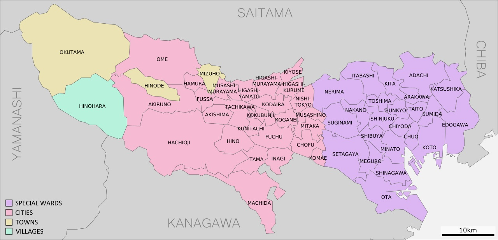

Tokio es la capital de Japón, ubicada en el centro este de la isla de Honshu, concretamente en la región de Kantō. Es la ciudad más poblada del mundo, con una población de unos 40 millones de habitantes. Es el centro de la política, economía, educación, comunicación y cultura del país. Cuenta también con la mayor concentración de sedes corporativas, instituciones financieras, universidades y colegios, museos, teatros, establecimientos comerciales y de entretenimiento de todo Japón.
La Megalópolis de Tokio se divide en el Tokio Occidental y Oriental. Tokio Occidental, también conocido como zona de Tama, consta de 30 municipios comunes (ciudades, villas y pueglos). Tokio Oriental se divide en 23 barrios especiales.

En esta página web nos centraremos en la zona de Tokio Oriental, donde te mostraremos los diferentes barrios de la ciudad y cuales son los lugares más emblemáticos para visitar.
También entraremos en detalle en el barrio de Taitō y en el barrio de Shibuya